CASE STUDY / FMCG PACKAGING
Biona Rice
Cake Range.
Improve Biona's Rice Cake Range Packaging
While working at Windmill Organics, I was asked to refresh Biona's rice cake range, a trusted pioneer in the organic food sector, but their rice cake packaging had become way too clinical. It was mostly white, felt sterile rather than appetizing, and lacked any real flavour personality. When sitting on a supermarket shelf next to major competitors like Kallo or Lundberg, Biona completely blended into the background. It was too 'clean', failing to communicate the brand's premium organic values or justify its price points against evolving competitors.
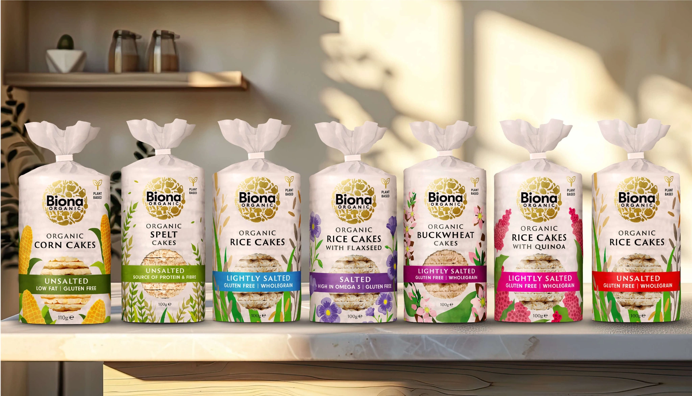
01 / THE CHALLENGE
The
problem.
The existing rice cake range presented three key challenges:
- Confusing Flavour Navigation: Shoppers couldn't tell variants like Salted vs Unsalted apart at a quick glance because there wasn't enough colour differentiation.
- Hidden health benefits: The key USPs and nourishment cues were lost in the layout instead of standing out proudly.
- Weak Shelf Presence: The overly White layouts looked too clinical rather than delicious and vibrant, losing out on appetite appeal.
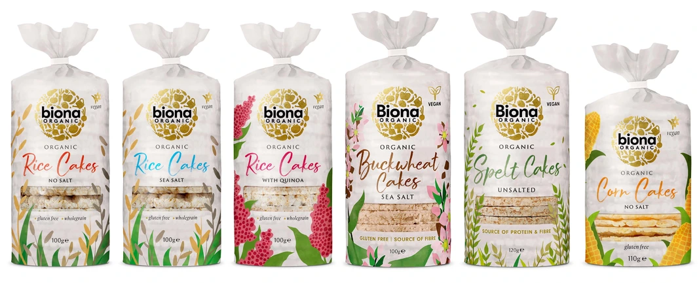
02 / COMPETITOR RESEARCH
Competitors
mood board.
Competitor packaging used bold colour blocks, clear flavour cues and larger typography to stand out on shelf. This highlighted an opportunity for Biona to introduce stronger colour and hierarchy while retaining its natural, organic identity.
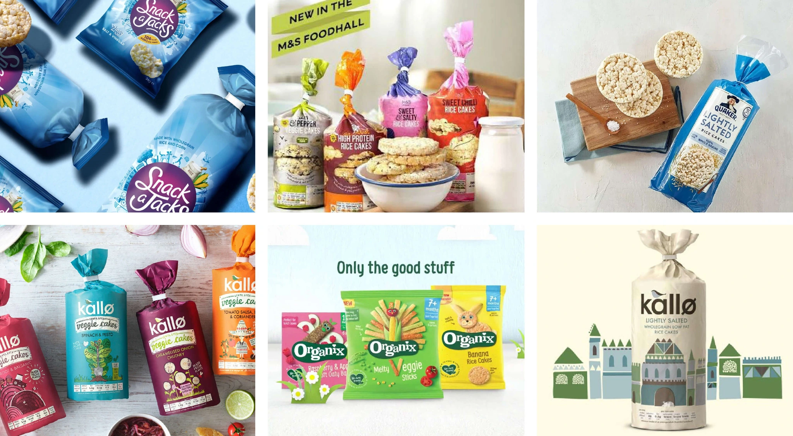
03 / COMPETITOR RESEARCH
Competitor
analysis.
Clear, Large Flavour Typography, all caps, contrast against background.
Big, unmissable colour blocks to signal flavour: Blue = Salted - Instant flavour separation.
Lightly Salted / Unsalted is the second biggest element after the brand/organic.
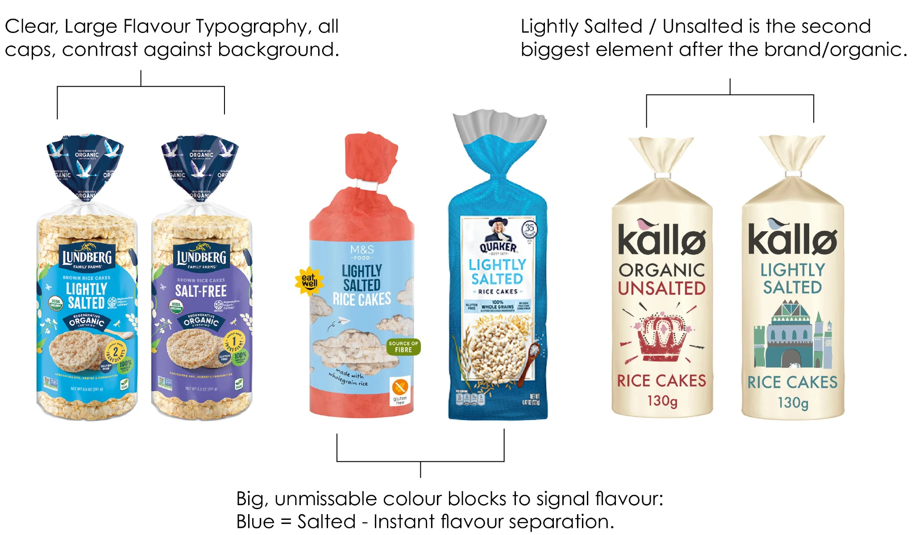
04 / IDEATION
Initial
sketches.
Three early routes explored different approaches to hierarchy, colour, product windows and illustration placement.
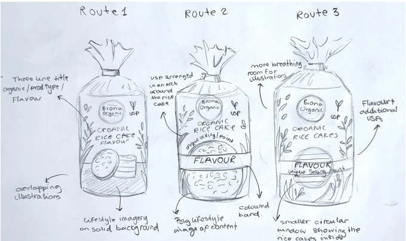
05 / DESIGN EXPLORATION
Route 1.
This route used bold blocks of colour, clear product naming and lifestyle imagery to make the packs feel brighter and more eye-catching. The overlapping illustrations also helped give each flavour more personality.
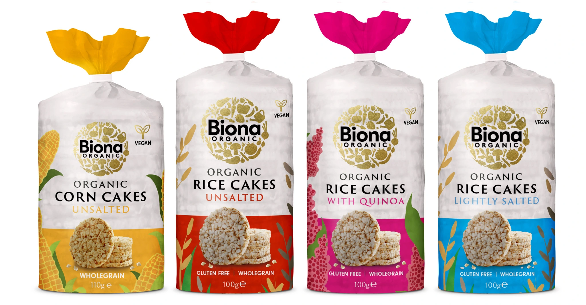
05 / DESIGN EXPLORATION
Route 2.
Here, the flavour was highlighted on a strong colour band, with the rice cake image as the main focus. The curved USP text helped frame the product and keep the layout clear and easy to follow (due to lack of space on the corn cakes we had to put it onto the band however that creates inconsistency)
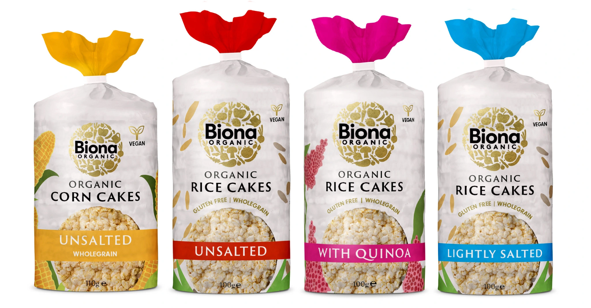
05 / DESIGN EXPLORATION
Route 3.
This route used a smaller product window, which gave the illustrations more room to breathe. Keeping the flavour and key claims together on the colour band made the range feel more consistent while still showing the product inside.
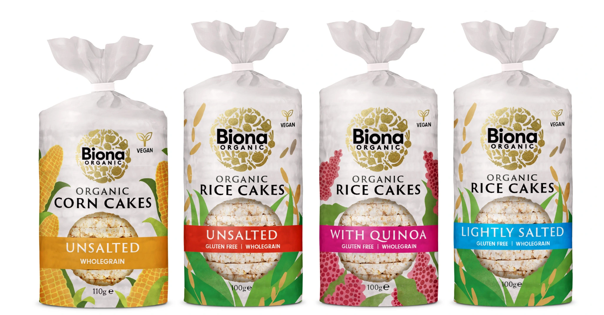
06 / ARTWORK DEVELOPMENT
Developing
chosen route 3.
The chosen route was refined using Biona’s brand guidelines, including updated fonts, correct logo spacing and a clearer hierarchy. I also reorganised the artwork around the cutter guide and completed the back of pack with the required product, nutritional and legal information
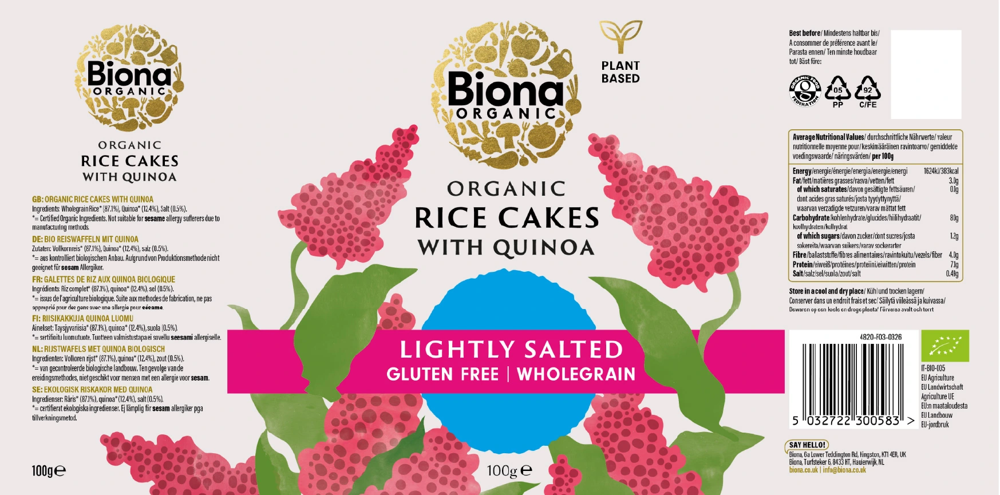
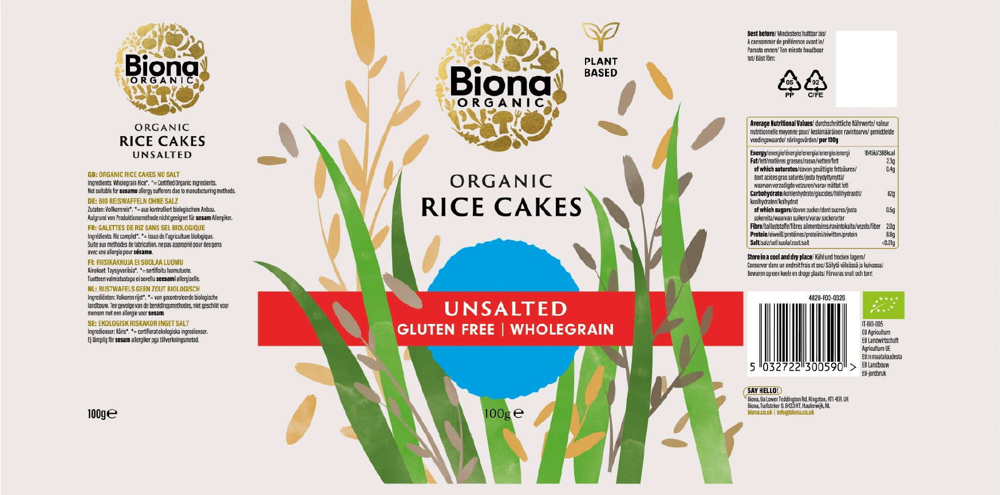
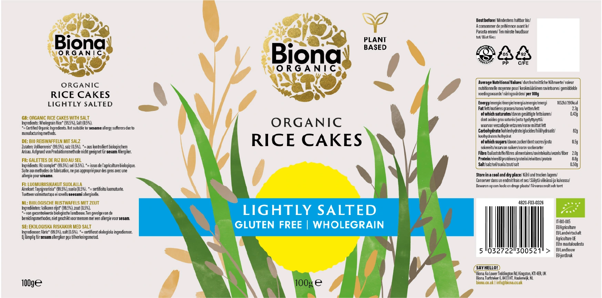
07 / SHELF PRESENCE
Shelf impact.
This comparison shows how the updated range feels more distinctive beside competitors. The stronger colour bands make flavours easier to tell apart, while the consistent layout helps the Biona rice cakes feel more connected as a range. The redesign keeps the natural white base, but gives the products more presence and clearer shelf navigation.
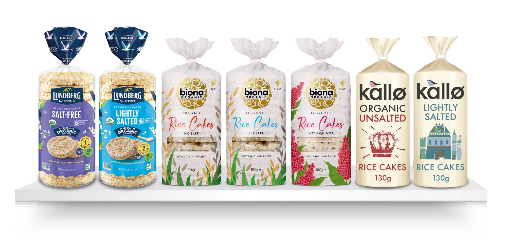
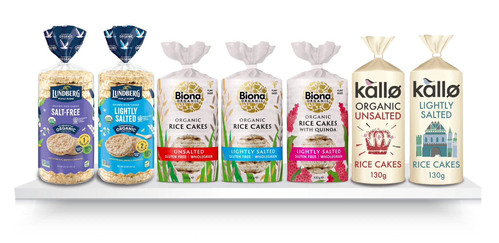
08 / LINE EXTENSION
New product
release.
The same design principles were applied to the new Flaxseed Rice Cakes which I designed, using the established hierarchy, product window and colour band to keep it consistent with the wider range.
A purple palette and flax flower illustrations gave the new product its own identity while still feeling clearly part of the Biona rice cake family.
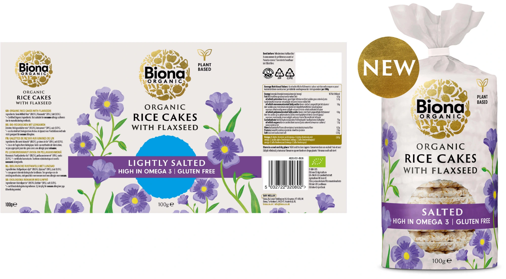
09 / FINAL PRODUCT VISUALS
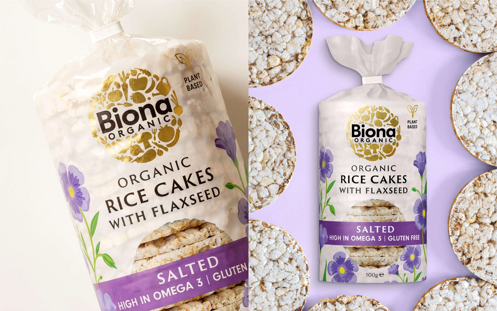
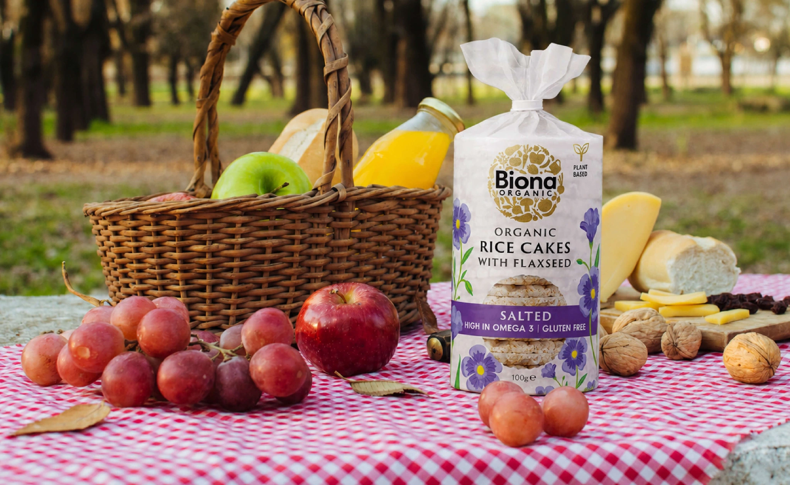
10 / LAUNCH CAMPAIGN
Meet the
new look.
The Biona rice cake range has been redesigned with a bolder, more cohesive look, making every variety easier to recognise while keeping the same nourishing organic recipes consumers already know and love - ideal for snacking, layering with toppings, and enjoying throughout the day.
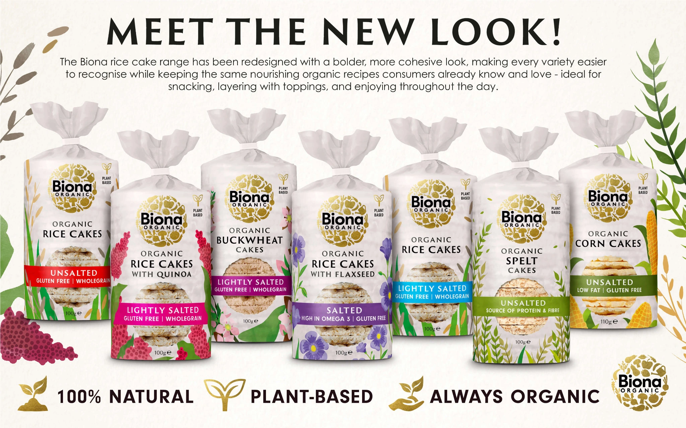
Reflection.
As the rice cakes were produced by different suppliers, the cutter guides and pack proportions varied slightly, which made it difficult to align every colour band perfectly. Biona's guidelines prioritised keeping the logos aligned across the range, so this became the main focus. Given more time, I'd explore a more flexible band system that works better across the different pack formats.